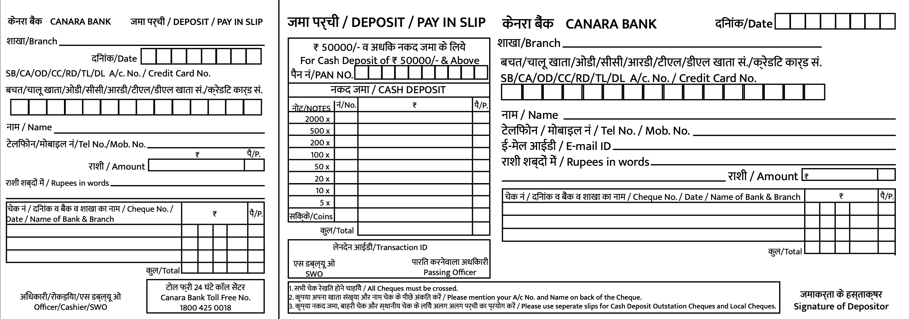
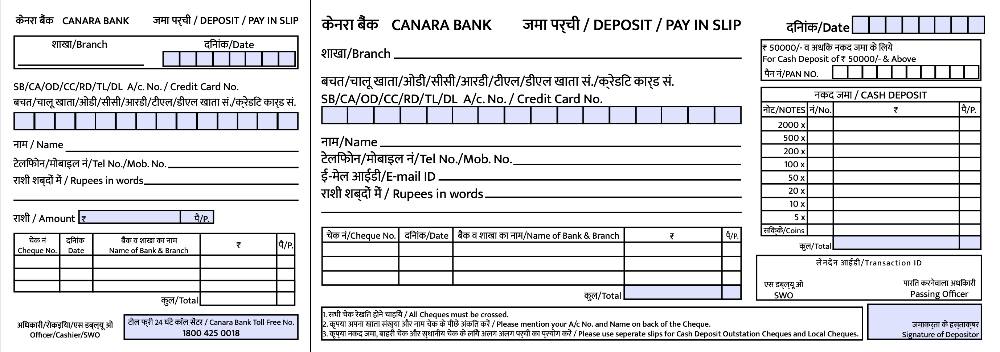

Redesigned a bank form, as part of the Semantic And Communication Theory course at IDC School of Design. The brief was to visually chunk information so as to maximise the comfort of understanding and filling in the form by the user.
Before
I sketched out a flow of how the user would approach filling in the form, giving priority to the flow of the information required by the bank, the ease by which a user might be able to fill in their information, while keeping the negative spaces, and the information and ink ratio in mind.
After
I also added colour to highlight the important areas on the form.